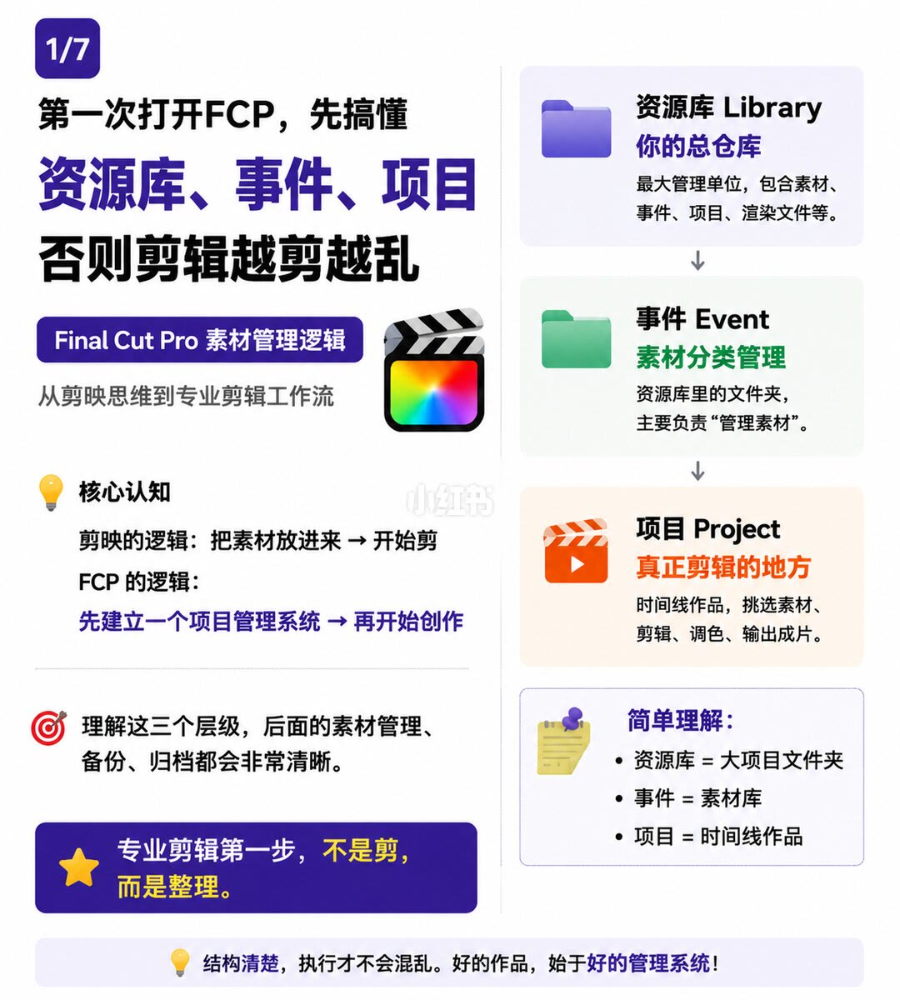
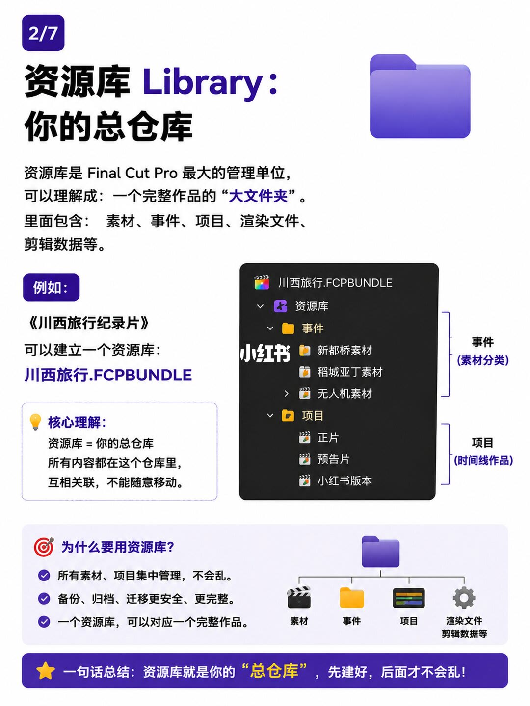
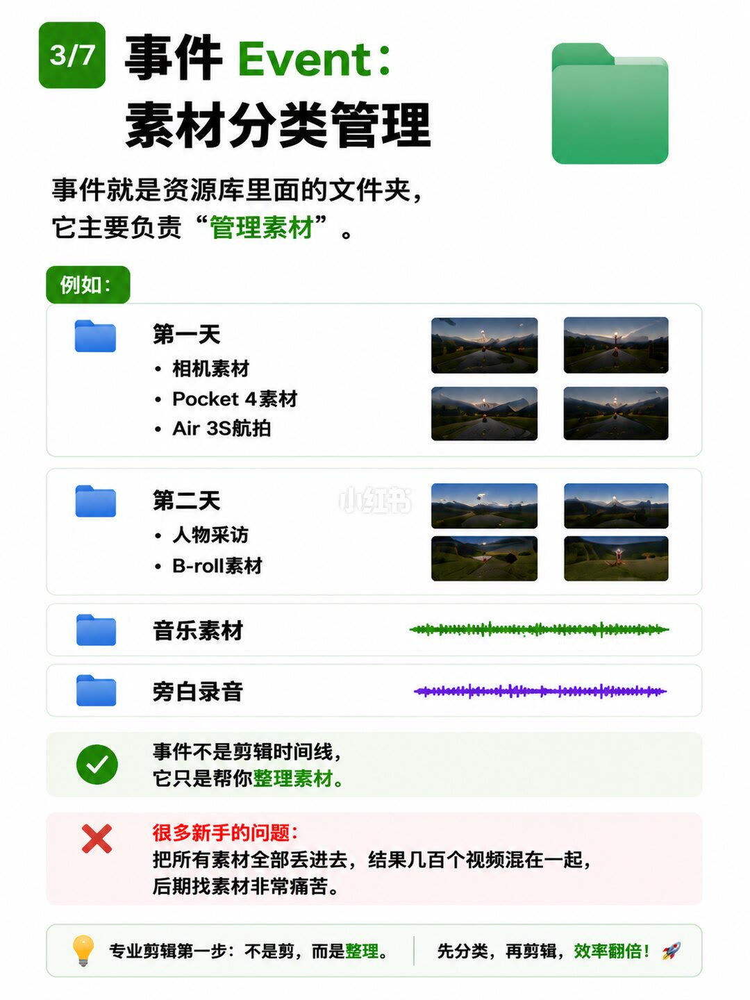
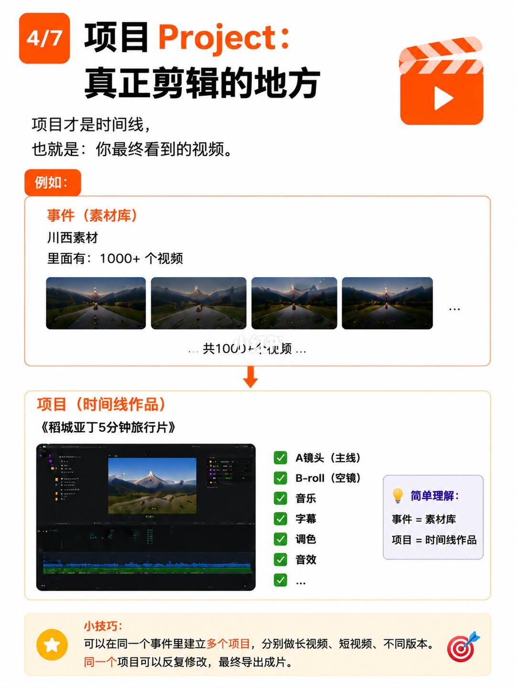
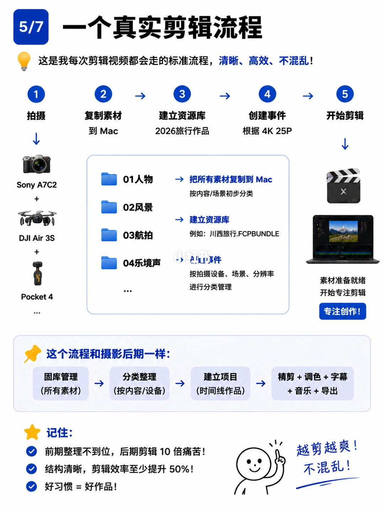
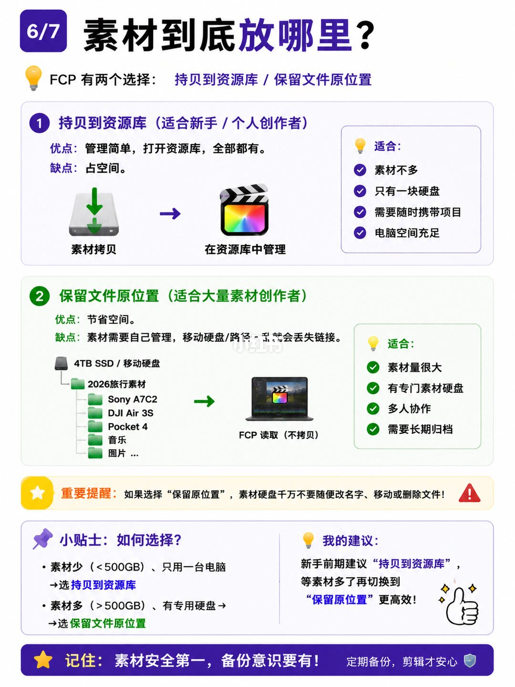
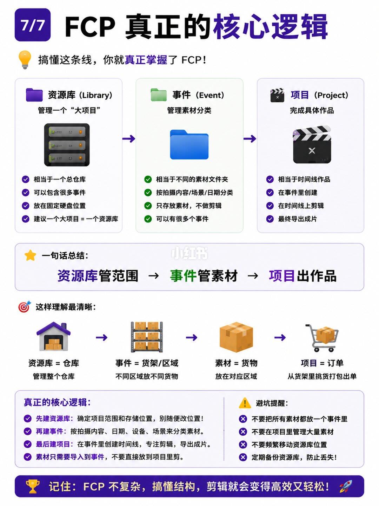

图文实录 · 小红书 · 敖舜
FCP资源库,事件,项目 为什么这么结构设计?
三层不是多出来的手续，是把「剪一条片子」换成一套能长期放素材的生产系统。资源库划定一个大项目的范围和存放位置，事件只负责把素材分类，项目才是时间线。素材少就拷进库，素材多就留在原盘，两边都不能随便改路径。
1/7
先建管理系统，再开始剪
页题：第一次打开 FCP，先搞懂资源库、事件、项目，否则剪辑越剪越乱。角标是 Final Cut Pro 素材管理逻辑，副题是从剪映思维到专业剪辑工作流。
核心认知把两条逻辑并排。剪映：把素材放进来，然后开始剪。FCP：先建立一个项目管理系统，再开始创作。页上写，理解这三个层级之后，素材管理、备份、归档都会清楚。星标句：专业剪辑第一步，不是剪，而是整理。
右栏自上而下：资源库 Library，你的总仓库，最大管理单位，包含素材、事件、项目、渲染文件等。事件 Event，素材分类管理，是资源库里的文件夹，主要负责「管理素材」。项目 Project，真正剪辑的地方，是时间线作品，用来挑选素材、剪辑、调色、输出成片。简单理解三条：资源库等于大项目文件夹，事件等于素材库，项目等于时间线作品。页脚：结构清楚，执行才不会混乱。好的作品，始于好的管理系统。

2/7
资源库是一个作品的总仓库
定义：资源库是 Final Cut Pro 最大的管理单位，可以理解成一个完整作品的「大文件夹」。里面包含素材、事件、项目、渲染文件、剪辑数据等。例子是《川西旅行纪录片》，对应文件名川西旅行.FCPBUNDLE。
目录图画成：川西旅行.FCPBUNDLE 下面有一个标成「资源库」的节点。其下分两支。事件（素材分类）列出新都桥素材、稻城亚丁素材、无人机素材。项目（时间线作品）列出正片、预告片、小红书版本。旁边的拓扑把资源库再拆成素材、事件、项目、渲染文件和剪辑数据。
核心理解：资源库就是总仓库，所有内容都在这个仓库里，互相关联，不能随意移动。为什么要用它，写了三条：素材和项目集中管理，不会乱；备份、归档、迁移更安全、更完整；一个资源库可以对应一个完整作品。页脚：先建好，后面才不会乱。

3/7
事件只分类，不是时间线
定义：事件就是资源库里面的文件夹，主要负责「管理素材」。例子分成四组。第一天：相机素材、Pocket 4 素材、Air 3S 航拍。第二天：人物采访、B-roll 素材。另外两组是音乐素材、旁白录音。每天旁边有风景缩略图，两类声音旁边是波形；缩略图内容无法逐张确认。
对勾句：事件不是剪辑时间线，它只是帮你整理素材。新手问题：把所有素材全部丢进去，结果几百个视频混在一起，后期找素材非常痛苦。页脚：专业剪辑第一步不是剪，而是整理；先分类，再剪辑，效率翻倍。这里的「翻倍」没有给出对照实验。

4/7
项目才是你最终看到的视频
定义：项目才是时间线，也就是你最终看到的视频。例子从事件（素材库）走到项目（时间线作品）。事件一侧是川西素材，写着里面有 1000+ 个视频，缩略图旁同样标着共 1000+ 个视频。箭头向下指向《稻城亚丁5分钟旅行片》。时间线里列出 A 镜头（主线）、B-roll（空镜）、音乐、字幕、调色、音效。简单理解：事件等于素材库，项目等于时间线作品。
小技巧两条：可以在同一个事件里建立多个项目，分别做长视频、短视频、不同版本；同一个项目可以反复修改，最终导出成片。1000+ 和 5 分钟都是这页的例子，不是对素材量或成片时长的规定。

5/7
从拍摄到开剪的五步
标题是一个真实剪辑流程。导语：这是作者每次剪辑视频都会走的标准流程，清晰、高效、不混乱。五步横排：拍摄；复制素材到 Mac；建立资源库，副标是 2026旅行作品；创建事件，副标是「根据 4K 25P」；开始剪辑，旁边是「专注创作！」拍摄设备写成 Sony A7C2、DJI Air 3S、Pocket 4。
中间说明四条：把所有素材复制到 Mac，按内容或场景初步分类，文件夹示例为 01人物、02风景、03航拍，第四个写成「04乐境声」，「乐」和「环」难以区分，无法确认是乐境声还是环境声；建立资源库，例如川西旅行.FCPBUNDLE；按拍摄设备、场景、分辨率进行分类管理；素材准备就绪，开始专注剪辑。
这页把流程比成摄影后期：图库管理（所有素材）→ 分类整理（按内容/设备）→ 建立项目（时间线作品）→ 精剪、调色、字幕、音乐、导出。记住三条：前期整理不到位，后期剪辑 10 倍痛苦；结构清晰，剪辑效率至少提升 50%；好习惯等于好作品。旁边还有「越剪越爽！不混乱！」10 倍和 50% 是页上口号，没有测量过程。

6/7
拷进库，或留在原位置
标题问素材到底放哪里。FCP 有两个选择：拷贝到资源库，或保留文件原位置。
第一种，拷贝到资源库，适合新手和个人创作者。优点：管理简单，打开资源库，全部都有。缺点：占空间。图示是素材拷贝之后在资源库中管理。适合：素材不多、只有一块硬盘、需要随时携带项目、电脑空间充足。
第二种，保留文件原位置，适合大量素材创作者。优点：节省空间。缺点：素材需要自己管理，移动硬盘或路径一旦改变就会丢失链接。图示硬盘标成 4TB SSD / 移动硬盘，目录是 2026旅行素材，下面能确认 Sony A7C2、DJI Air 3S、Pocket 4、音乐；还有一项像图片并带省略号，文件名无法确认。箭头写 FCP 读取（不拷贝）。适合：素材量很大、有专门素材硬盘、多人协作、需要长期归档。多人协作具体怎么分权限，这页没有写。
重要提醒：如果选择「保留原位置」，素材硬盘千万不要随便改名字、移动或删除文件。如何选择：素材少（小于 500GB）、只用一台电脑，选拷贝到资源库；素材多（大于 500GB）、有专用硬盘，选保留文件原位置。正好 500GB 落在哪一侧，页上没有写。建议：新手前期拷贝到资源库，等素材多了再切换到「保留原位置」更高效。页脚：素材安全第一，备份意识要有；定期备份，剪辑才安心。

7/7
范围、素材、作品，按这个顺序建
标题是 FCP 真正的核心逻辑。导语：搞懂这条线，就真正掌握了 FCP。三栏：资源库管理一个「大项目」，相当于总仓库，可以包含很多事件，放在固定硬盘位置，建议一个大项目等于一个资源库。事件管理素材分类，相当于不同的素材文件夹，按拍摄内容、场景、日期分类，只存放素材、不做剪辑，可以有很多个事件。项目完成具体作品，相当于时间线作品，在事件里创建，在时间线上剪辑，最终导出成片。一句话：资源库管范围，事件管素材，项目出作品。
仓库比喻：资源库等于仓库，管理整个仓库；事件等于货架或区域，不同区域放不同货物；素材等于货物，放在对应区域；项目等于订单，从货架里挑货打包出单。
真正的核心逻辑四步：先建资源库，确定项目范围和存储位置，别随便改位置；再建事件，按拍摄内容、日期、设备、场景来分类素材；最后建项目，在事件里创建时间线，专注剪辑，导出成片；素材只需要导入到事件，不要直接放到项目里剪。避坑四条：不要把所有素材都放在一个事件里；不要在项目里管理大量素材；不要频繁移动资源库位置；定期备份资源库，防止丢失。页脚：FCP 不复杂，搞懂结构，剪辑就会变得高效又轻松。

汇总
三层分工成立，口号不能当指标
结论
资源库划定一个大项目的范围并固定存放，事件只分类素材，项目才是可反复改、可导出的时间线。素材少、单机、要随身带，就拷进资源库；素材大、有专用盘，就留在原位置，并且不改名、不挪、不删。顺序是先库、再事件、最后项目。
支撑页
三层定义在 1/7。资源库和川西目录树在 2/7。事件分类和「不是时间线」在 3/7。同一事件多个项目在 4/7。五步流程和摄影后期类比在 5/7。两种存放和 500GB 分界在 6/7。顺序、仓库比喻和避坑在 7/7。
边界
2/7 的目录树把事件和项目画成资源库下的两支；4/7 和 7/7 写项目建在事件里面。两张图没有合成一张操作说明。5/7 的 10 倍痛苦和至少提升 50%，以及 3/7 的效率翻倍，都是口号。6/7 的分界是小于或大于 500GB，正好 500GB 没写；从拷贝切换到保留原位置的具体步骤没写。5/7 第四个文件夹无法确认是「04乐境声」还是「04环境声」。6/7 素材盘上「图片」一项的完整文件名无法确认。